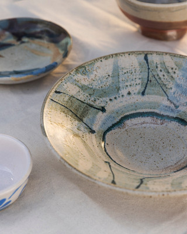
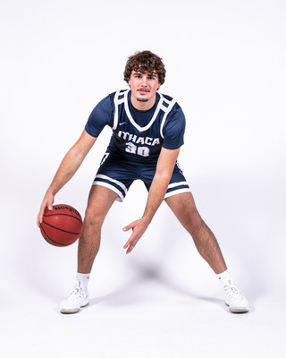
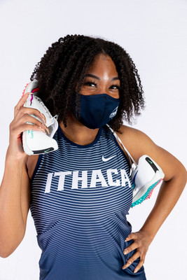
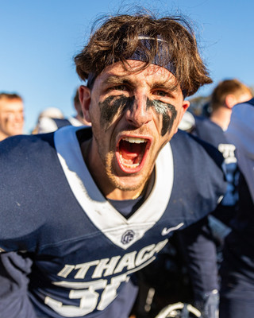

Photographer, storyteller, visual creator
With over a decade of experience in professional photography, I specialize in capturing authentic moments across sports, portraits, and commercial work. My approach combines technical precision with creative storytelling to create images that resonate and endure.
Whether I'm on the sidelines capturing the decisive moment in a championship game, in the studio crafting the perfect portrait, or on location for a commercial shoot, my goal is always the same: to create images that tell a story and evoke emotion.


Photography has been my passion since I first picked up a camera. What started as a hobby capturing local sports events has evolved into a full-time career spanning portrait sessions, commercial projects, and creative collaborations.
Every shoot is an opportunity to tell a unique story. From high-energy sports action to intimate portrait sessions, I bring enthusiasm, professionalism, and a keen eye for detail to every project.
I believe in building genuine connections with my subjects, whether that's athletes in the heat of competition, individuals during portrait sessions, or brands looking to showcase their products. This authenticity translates directly into compelling, honest imagery.
My process is collaborative and adaptable. I work closely with clients to understand their vision and goals, then bring my technical expertise and creative perspective to deliver images that exceed expectations.


Working primarily with professional Canon and Sony systems, I use a range of prime and zoom lenses to adapt to any shooting environment—from fast-paced sports action to controlled studio setups.
Technical proficiency is essential, but it's just the foundation. What truly matters is the ability to anticipate moments, understand light, and connect with subjects to capture images that tell meaningful stories.
Dynamic action shots capturing the intensity and passion of athletic competition
Authentic portraits revealing personality and character in studio or on location
Product and still life photography with polished, professional results
Capturing spaces, structures, and design elements with artistic vision
Interested in working together? I'd love to hear about your project and discuss how we can bring your vision to life.
Get In Touch